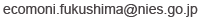

© 2024 National Institute for Environmental Studies
クイズトレーニングに出題する種の頻度を一人ひとりに合わせてカスタマイズするため、および利用者の回答傾向およびトレーニングによる種判別能力向上の程度を評価するため、 トレーニング、テストの回答履歴、アクセス時刻、IPアドレス、ブラウザ情報を収集します。 また、取得されたデータは、解析を経て学術論文や報告書で用いられる可能性があります。 上記の情報利用者は、研究責任者である国立環境研究所 深澤圭太と研究担当者です。 情報の管理については、国立環境研究所が責任を有します。 利用者の求めに応じて、個々の情報の利用を停止することができます。 ご希望の場合、までご連絡ください。
とりトレを行うことによって、研究へ参加したこととなります。 研究への参加（トレーニングとテストを受けること）は、対象者自身の自由意思によって決定され、参加に同意した後であっても、 Webサイトにアクセスしないことでいつでも参加を取りやめることができ、そのことによって対象者が不利益を被ることはありません。 質問がある場合は、までご連絡ください。
とりトレを始めることで、以上の事項に同意されたとみなします。
© 2024 National Institute for Environmental Studies